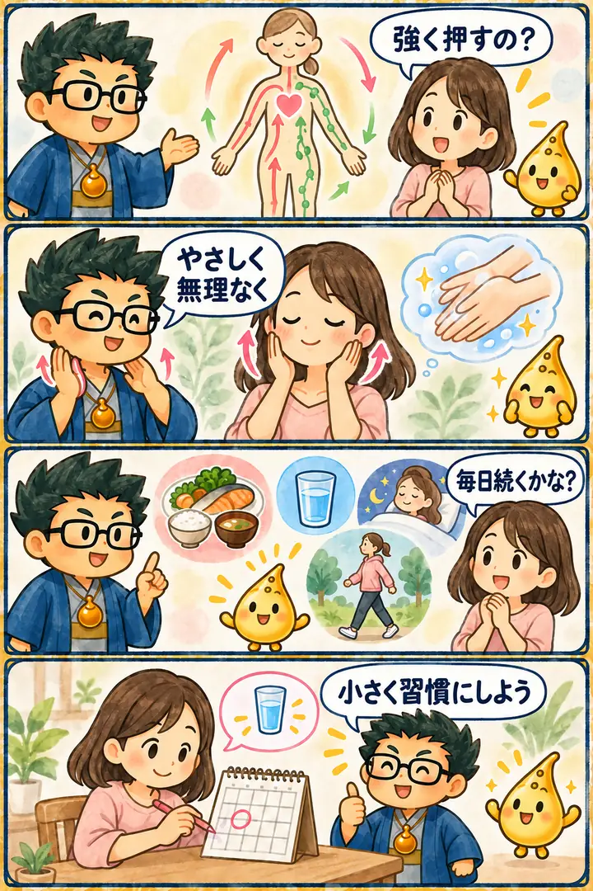

第2期 Zoom講座・第3回・特別講義
リンパケアと継続の仕組み
この回の要約
占いアプリの回ではなく、体のめぐりと日々のセルフケアを扱った特別講義です。無理なく続ける仕組みを学びます。
体のめぐりを理解し、強い刺激に頼らない日常のセルフケアを考えます。
一度に大きく変えず、行動のきっかけを決めて続けやすくします。
体調の判断や治療を目的とせず、気になる症状は医療機関へ相談します。
4コマ漫画でつかむ

タイムスタンプ
時間を押すと、上の動画がその場面から再生されます。
覚えておきたいこと
- 基礎理解血管とリンパの役割を分けて学ぶ
- 観察むくみや疲れを生活習慣とともに振り返る
- セルフケア痛みや無理のない範囲で行う
- 継続時間ではなく、行動のきっかけに結びつける
- 安全症状や不安がある場合は専門家へ相談する
復習ポイント
講義内の占術上の説明・時代の読み・象徴的な解釈は、講師の見立てです。客観的な事実や将来を保証するものではありません。